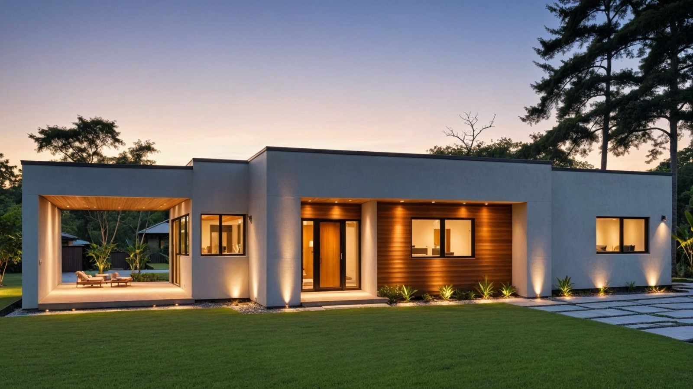
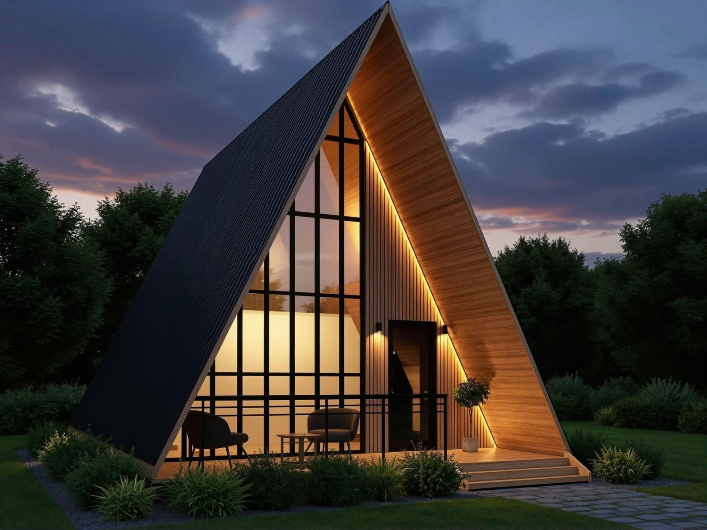

Viviendas a medida
01Espacios funcionales, luminosos y pensados para la vida cotidiana.
Consultá por tu viviendaTUCUMÁN · CONSTRUCCIÓN IN SITU
Viviendas Wood Frame, diseñadas a medida y construidas íntegramente en tu terreno.

01 / EL SISTEMA
Wood Frame combina una estructura de madera con capas de cerramiento y aislación. Un sistema de construcción en seco que permite trabajar con precisión y reducir los tiempos de ejecución.
Consultá por Wood FrameConstruimos cada vivienda desde el inicio hasta la terminación en el lugar donde vas a vivir. Sin trasladar módulos ni estructuras prefabricadas.
Una obra en seco con etapas planificadas. Los plazos se definen según tu proyecto.
Aislación térmica y acústica para una vivienda confortable y un uso eficiente de la energía.
Control de uniones, materiales y terminaciones durante el proceso de construcción.
02 / TU PRÓXIMO ESPACIO
Tu terreno, tus necesidades y tu estilo de vida son el punto de partida. Cada proyecto se adapta a vos.
Espacios funcionales, luminosos y pensados para la vida cotidiana.
Consultá por tu vivienda
Para disfrutar en familia o desarrollar tu proyecto de alojamiento turístico.
Pensá tu próxima cabañaImágenes ilustrativas de propuestas de diseño. Cada proyecto se desarrolla a medida.
NUESTRO COMPROMISO
Nuestra misión es acompañarte con decisiones claras, una ejecución cuidada y comunicación durante cada etapa. Para que disfrutes tanto el proceso como el lugar al que vas a llamar hogar.
Empecemos a conversar03 / CONSTRUCCIÓN INTEGRAL
El foco está en Wood Frame. Nuestra propuesta también abarca obras convencionales y mejoras para tus espacios.
Casas y edificios con sistemas de ladrillo, cemento y hormigón, según las necesidades de la obra.
Nuevos ambientes, remodelaciones y renovación de espacios existentes.
Distribución, funcionalidad y terminaciones pensadas en conjunto desde el primer plano.
Remodelación de piscinas y mejoras para integrar los espacios exteriores a tu hogar.
04 / DE LA IDEA A LA OBRA
Conversamos sobre tu terreno, necesidades y presupuesto.
Acordamos diseño, alcance, materiales y etapas de ejecución.
Realizamos la obra con seguimiento y control de cada etapa.
Revisamos terminaciones y las condiciones de garantía acordadas por escrito.
ANTES DE EMPEZAR
No. Próxima construye íntegramente en el terreno. No fabrica módulos ni traslada estructuras para ensamblarlas en el sitio.
Depende del diseño, superficie, terreno y alcance de las terminaciones. El sistema Wood Frame permite reducir tiempos de ejecución; el cronograma se define para cada obra.
Sí. Los proyectos se desarrollan según el estilo de vida de cada familia, las características del terreno y el presupuesto disponible.
Sí. Además de Wood Frame, realizamos construcción convencional, ampliaciones, refacciones, diseño y remodelación de piscinas.
05 / CONVERSEMOS
Contanos qué tenés en mente.
Vamos a darle forma juntos.